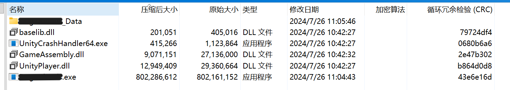
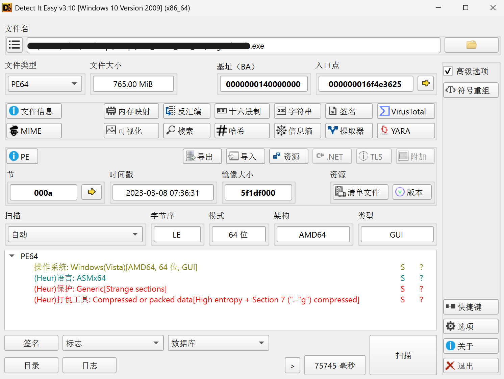
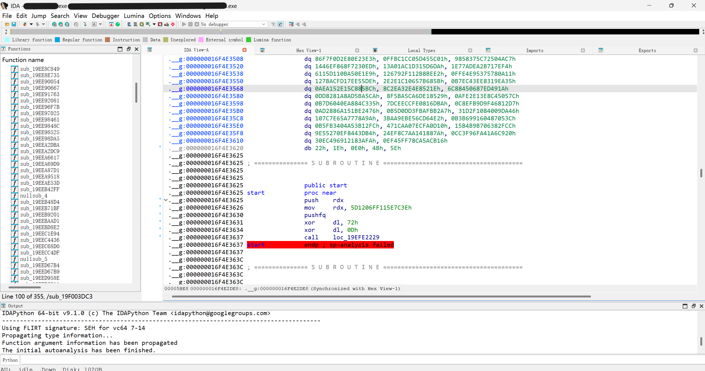
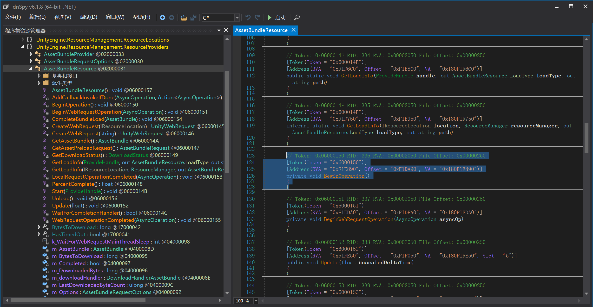
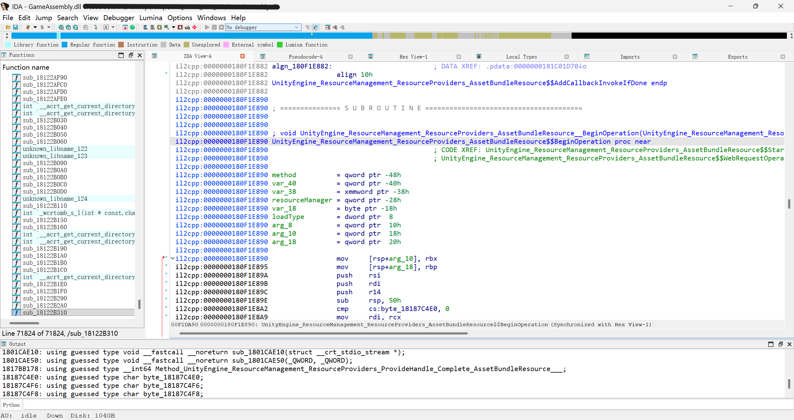
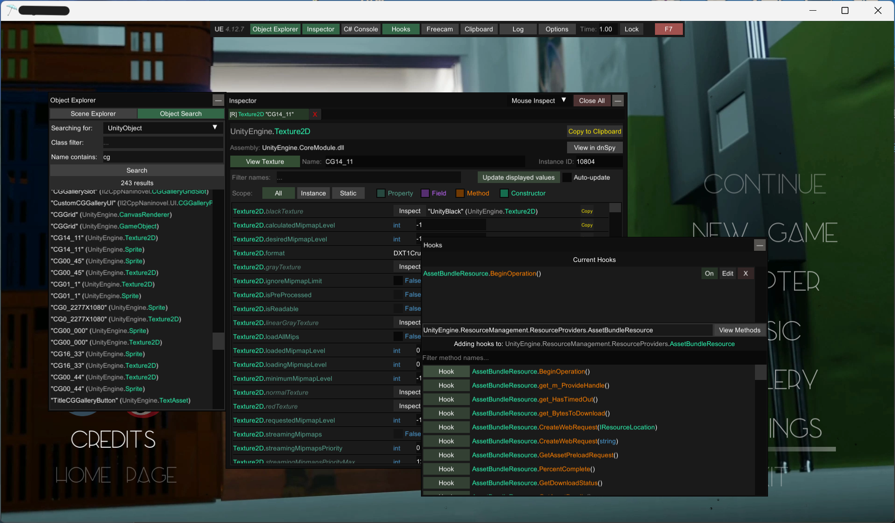
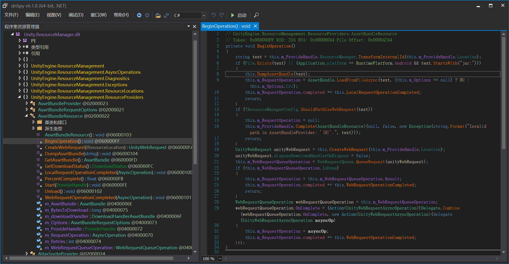
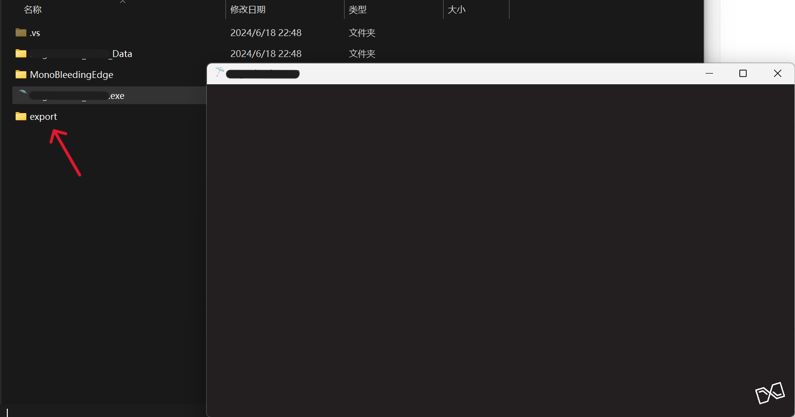

很久没写博客了，因为没东西可写，光顾着玩，再加上没有很多感兴趣的东西可以研究（人话：懒），有兴趣的又太难（人话：弱），总之依然是借前人和AI之力开展研究，提取一个游戏的资源。
初步研究：分析结构&确定方向

简单判断一下是il2cpp的打包方式，相比mono的最大特征是只有一个单独的GameAssembly.dll，所有游戏代码（包括用户编写的和Unity自带的）均转写为原生的C++，复原和分析难度都更大。在xxx_Data中有StreamingAssets文件夹，证明资源存储在AssetBundle中，但是奇怪的是xxx_Data\StreamingAssets\aa\StandaloneWindows64中没有任何文件，理论上这里应该存放若干*.bundle，甚至还有catalog.json支持（catalog记录了所有ab包的名字），那bundle会在哪呢？
我们回到游戏主程序，它远远大于其它组件，非常异常。这和资源文件一般很大相吻合，很可能出于保护资源文件的目的，将其和游戏主程序打包在一起。
那么我们查一下主程序的壳。

不知道是什么壳，但是有一段高熵异常数据，区段名字也奇奇怪怪，丢进IDA研究一下。

哈哈，入口点都在这个新区段里，真是乱七八糟，再加上一堆不能被识别为代码的数据和红色的栈指针分析失败，可以直接跑路了（）直接硬攻怕是没有好下场，于是我这样分析之后就弃坑了两年。
谁来助我？
资源加载逻辑分析
在漫长的等待下出现了一篇救世主般的文章，解决了最麻烦的查询文档部分
在unity官方文档中我们定位到Addressables位于UnityEngine.ResourceManagement.dll，在vs中我们定位到异步加载bundle的函数入口为UnityEngine.ResourceManagement.ResourceProviders
虽然它是针对mono架构的，il2cpp没有这个单独的UnityEngine.ResourceManagement.dll，但是可以借鉴这个思路，只要定位到相应的函数，就可以在Unity引擎内部进行修改并导出AB包，绕过外部的保护。
那就开始吧，直接Il2cppDumper启动，获取GameAssembly.dll中相应函数的位置。


参考文章中的代码，这部分有函数签名的代码也比较好懂，特别是还可以就着mono的一起看。
1
2
3
4
5
6
7
8
9
10
11
12
13
14
15
16
17
18
19
20
21
22
23
24
25
26
27
28
29
30
31
32
33
34
35
36
37
38
39
40
41
42
43
44
45
46
47
48
49
50
51
52
53
54
55
56
57
58
59
60
61
62
63
64
65
66
67
68
69
70
71
72
73
74
75
76
77
78
79
80
81
82
83
84
85
86
87
88
89
90
91
92
93
94
95
96
97
98
99
100
101
102
103
104
105
106
107
108
109
110
111
112
113
114
115
116
117
118
119
120
121
122
123
124
125
126
127
128
129
130
131
132
133
134
135
136
137
138
139
140
141
142
143
144
145
146
147
148
149
150
151
152
153
154
155
156
157
158
159
160
161
162
163
164
165
166
167
168
169
170
171
172
173
174
175
176
177
178
179
180
181
182
183
184
185
186
187
188
189
190
191
192
193
194
195
196
197
198
199
200
201
202
203
204
205
206
207
208
209
210
211
212
213
214
215
216
217
218
219
220
221
222
223
224
225
226
227
228
229
230
231
232
233
234
235
236
237
238
239
240
241
242
243
244
245
246
247
248
249
250
251
252
253
254
255
256
257
258
259
260
261
262
263
264
265
266
267
268
269
270
271
272
273
274
| void UnityEngine_ResourceManagement_ResourceProviders_AssetBundleResource__BeginOperation(
UnityEngine_ResourceManagement_ResourceProviders_AssetBundleResource_o *this,
const MethodInfo *method)
{
uint32_t m_Crc;
UnityEngine_ResourceManagement_ResourceManager_o *m_ResourceManager;
bool v5;
UnityEngine_ResourceManagement_ResourceLocations_IResourceLocation_o *v6;
Il2CppObject *m_TransformedInternalId;
System_String_o *v8;
UnityEngine_ResourceManagement_AsyncOperations_IGenericProviderOperation_o *InternalOp;
UnityEngine_ResourceManagement_ResourceLocations_IResourceLocation_o *v10;
UnityEngine_ResourceManagement_Exceptions_RemoteProviderException_o *v11;
System_Exception_o *v12;
UnityEngine_Networking_UnityWebRequest_o *WebRequest_6458306688;
UnityEngine_Networking_UnityWebRequest_o *v14;
UnityEngine_Sprite_o *sprite;
UnityEngine_ResourceManagement_AsyncOperations_IGenericProviderOperation_o *v16;
_QWORD *v17;
_QWORD *v18;
UnityEngine_Sprite_o *v19;
bool v20;
__int64 v21;
__int64 typeHierarchyDepth;
bool v23;
_QWORD *v24;
UnityEngine_Networking_DownloadHandlerAssetBundle_o *v25;
UnityEngine_ResourceManagement_WebRequestQueueOperation_o *v26;
UnityEngine_ResourceManagement_WebRequestQueueOperation_o *v27;
System_Delegate_o *OnComplete;
UnityEngine_Events_UnityAction_T0__o *v29;
System_Delegate_o *v30;
System_Delegate_o *v31;
System_Action_UnityWebRequestAsyncOperation__c *v32;
System_Delegate_o *v33;
__int64 v34;
__int64 v35;
System_Action_UnityWebRequestAsyncOperation__c *v36;
__int64 v37;
struct UnityEngine_ResourceManagement_ResourceProviders_AssetBundleRequestOptions_o *m_Options;
struct UnityEngine_AsyncOperation_o *v39;
UnityEngine_AsyncOperation_o *v40;
UnityEngine_Events_UnityAction_T0__o *v41;
UnityEngine_Events_UnityAction_T0__o *v42;
__int64 v43;
System_Exception_o *v44;
System_String_o *v45;
__int128 v46;
int32_t loadType;
if ( !byte_18187C4E0 )
{
sub_1801CAD00(&System_Action_UnityWebRequestAsyncOperation__TypeInfo);
sub_1801CAD00(&System_Action_AsyncOperation__TypeInfo);
sub_1801CAD00(&Method_UnityEngine_ResourceManagement_ResourceProviders_AssetBundleResource_LocalRequestOperationCompleted__);
sub_1801CAD00(&Method_UnityEngine_ResourceManagement_ResourceProviders_AssetBundleResource__BeginOperation_b__34_0__);
sub_1801CAD00(&UnityEngine_Networking_DownloadHandlerAssetBundle_TypeInfo);
sub_1801CAD00(&UnityEngine_ResourceManagement_ResourceProviders_DownloadOnlyLocation_TypeInfo);
sub_1801CAD00(&Method_UnityEngine_ResourceManagement_ResourceProviders_ProvideHandle_Complete_AssetBundleResource___);
sub_1801CAD00(&UnityEngine_ResourceManagement_Exceptions_RemoteProviderException_TypeInfo);
sub_1801CAD00(&UnityEngine_ResourceManagement_WebRequestQueue_TypeInfo);
sub_1801CAD00(&StringLiteral_3528);
byte_18187C4E0 = 1;
}
m_Crc = 0;
m_ResourceManager = this->fields.m_ProvideHandle.fields.m_ResourceManager;
v5 = byte_18187C4F8 == 0;
v46 = *(_OWORD *)&this->fields.m_ProvideHandle.fields.m_Version;
loadType = 0;
this->fields.m_DownloadedBytes = 0;
if ( v5 )
{
sub_1801CAD00(&UnityEngine_ResourceManagement_AsyncOperations_IGenericProviderOperation_TypeInfo);
byte_18187C4F8 = 1;
}
if ( !byte_18187C4F6 )
{
sub_1801CAD00(&UnityEngine_ResourceManagement_AsyncOperations_IGenericProviderOperation_TypeInfo);
byte_18187C4F6 = 1;
}
if ( !*((_QWORD *)&v46 + 1) )
goto LABEL_54;
if ( (unsigned int)sub_180002860(
2,
UnityEngine_ResourceManagement_AsyncOperations_IGenericProviderOperation_TypeInfo,
*((_QWORD *)&v46 + 1)) != (_DWORD)v46 )
{
v43 = sub_1801CAD00(&System_Exception_TypeInfo);
v44 = (System_Exception_o *)sub_1801A8CD0(v43);
sub_180002390(v44);
v45 = (System_String_o *)sub_1801CAD00(&StringLiteral_206);
System_Exception___ctor_6456892944(v44, v45, 0);
sub_1801CAD00(&Method_UnityEngine_ResourceManagement_ResourceProviders_ProvideHandle_get_InternalOp__);
sub_1801CAE10((struct __crt_stdio_stream *)v44);
}
v6 = (UnityEngine_ResourceManagement_ResourceLocations_IResourceLocation_o *)sub_180002860(
3,
UnityEngine_ResourceManagement_AsyncOperations_IGenericProviderOperation_TypeInfo,
*((_QWORD *)&v46 + 1));
UnityEngine_ResourceManagement_ResourceProviders_AssetBundleResource__GetLoadInfo_6458308432(
v6,
m_ResourceManager,
&loadType,
&this->fields.m_TransformedInternalId,
0);
if ( loadType == 1 )
{
m_Options = this->fields.m_Options;
if ( m_Options )
m_Crc = m_Options->fields.m_Crc;
v39 = (struct UnityEngine_AsyncOperation_o *)UnityEngine_AssetBundle__LoadFromFileAsync_6459020096(
this->fields.m_TransformedInternalId,
m_Crc,
0);
this->fields.m_RequestOperation = v39;
v40 = v39;
v41 = (UnityEngine_Events_UnityAction_T0__o *)sub_1801A8CD0(System_Action_AsyncOperation__TypeInfo);
v42 = v41;
if ( !v41 )
goto LABEL_54;
UnityEngine_Events_UnityAction_object____ctor(
v41,
(Il2CppObject *)this,
Method_UnityEngine_ResourceManagement_ResourceProviders_AssetBundleResource_LocalRequestOperationCompleted__,
0);
if ( !v40 )
goto LABEL_54;
if ( UnityEngine_AsyncOperation__get_isDone(v40, 0) )
((void (__fastcall *)(intptr_t, UnityEngine_AsyncOperation_o *, intptr_t))v42->fields.invoke_impl)(
v42->fields.method_code,
v40,
v42->fields.method);
else
UnityEngine_AsyncOperation__add_completed(v40, (System_Action_AsyncOperation__o *)v42, 0);
}
else
{
m_TransformedInternalId = (Il2CppObject *)this->fields.m_TransformedInternalId;
if ( loadType != 2 )
{
this->fields.m_RequestOperation = 0;
v8 = System_String__Format(StringLiteral_3528, m_TransformedInternalId, 0);
if ( !byte_18187C4F8 )
{
sub_1801CAD00(&UnityEngine_ResourceManagement_AsyncOperations_IGenericProviderOperation_TypeInfo);
byte_18187C4F8 = 1;
}
InternalOp = UnityEngine_ResourceManagement_ResourceProviders_ProvideHandle__get_InternalOp(
&this->fields.m_ProvideHandle,
0);
if ( InternalOp )
{
v10 = (UnityEngine_ResourceManagement_ResourceLocations_IResourceLocation_o *)sub_180002860(
3,
UnityEngine_ResourceManagement_AsyncOperations_IGenericProviderOperation_TypeInfo,
InternalOp);
v11 = (UnityEngine_ResourceManagement_Exceptions_RemoteProviderException_o *)sub_1801A8CD0(UnityEngine_ResourceManagement_Exceptions_RemoteProviderException_TypeInfo);
v12 = (System_Exception_o *)v11;
if ( v11 )
{
UnityEngine_ResourceManagement_Exceptions_RemoteProviderException___ctor(v11, v8, v10, 0, 0, 0);
UnityEngine_ResourceManagement_ResourceProviders_ProvideHandle__Complete_object_(
&this->fields.m_ProvideHandle,
0,
0,
v12,
(const MethodInfo_5DB490 *)Method_UnityEngine_ResourceManagement_ResourceProviders_ProvideHandle_Complete_AssetBundleResource___);
this->fields.m_Completed = 1;
return;
}
}
LABEL_54:
sub_1801CAE50(this, method);
}
this->fields.m_WebRequestCompletedCallbackCalled = 0;
WebRequest_6458306688 = UnityEngine_ResourceManagement_ResourceProviders_AssetBundleResource__CreateWebRequest_6458306688(
this,
(System_String_o *)m_TransformedInternalId,
0);
v14 = WebRequest_6458306688;
if ( !WebRequest_6458306688 )
goto LABEL_54;
sprite = UnityEngine_Tilemaps_Tile__get_sprite((UnityEngine_Tilemaps_Tile_o *)WebRequest_6458306688, 0);
if ( !byte_18187C4F8 )
{
sub_1801CAD00(&UnityEngine_ResourceManagement_AsyncOperations_IGenericProviderOperation_TypeInfo);
byte_18187C4F8 = 1;
}
v16 = UnityEngine_ResourceManagement_ResourceProviders_ProvideHandle__get_InternalOp(
&this->fields.m_ProvideHandle,
0);
if ( !v16 )
goto LABEL_54;
v17 = (_QWORD *)sub_180002860(
3,
UnityEngine_ResourceManagement_AsyncOperations_IGenericProviderOperation_TypeInfo,
v16);
method = (const MethodInfo *)UnityEngine_Networking_DownloadHandlerAssetBundle_TypeInfo;
v18 = v17;
if ( !sprite )
goto LABEL_54;
v19 = 0;
if ( (UnityEngine_Networking_DownloadHandlerAssetBundle_c *)sprite->klass == UnityEngine_Networking_DownloadHandlerAssetBundle_TypeInfo )
v19 = sprite;
if ( !v19 )
sub_1801CA880(sprite, UnityEngine_Networking_DownloadHandlerAssetBundle_TypeInfo, v17);
if ( v17 )
{
v21 = *v17;
typeHierarchyDepth = UnityEngine_ResourceManagement_ResourceProviders_DownloadOnlyLocation_TypeInfo->_2.typeHierarchyDepth;
v23 = *(_BYTE *)(v21 + 300) >= (unsigned __int8)typeHierarchyDepth
&& *(UnityEngine_ResourceManagement_ResourceProviders_DownloadOnlyLocation_c **)(*(_QWORD *)(v21 + 200)
+ 8 * typeHierarchyDepth
- 8) == UnityEngine_ResourceManagement_ResourceProviders_DownloadOnlyLocation_TypeInfo;
v24 = 0;
if ( v23 )
v24 = v18;
v20 = v24 == 0;
}
else
{
v20 = 1;
}
v25 = 0;
if ( (UnityEngine_Networking_DownloadHandlerAssetBundle_c *)sprite->klass == UnityEngine_Networking_DownloadHandlerAssetBundle_TypeInfo )
v25 = (UnityEngine_Networking_DownloadHandlerAssetBundle_o *)sprite;
UnityEngine_Networking_DownloadHandlerAssetBundle__set_autoLoadAssetBundle(v25, v20, 0);
v14->fields._disposeDownloadHandlerOnDispose_k__BackingField = 0;
if ( !UnityEngine_ResourceManagement_WebRequestQueue_TypeInfo->_2.cctor_finished )
il2cpp_runtime_class_init();
v26 = UnityEngine_ResourceManagement_WebRequestQueue__QueueRequest(v14, 0);
this->fields.m_WebRequestQueueOperation = v26;
v27 = v26;
if ( !v26 )
goto LABEL_54;
if ( v26->fields.m_Completed || v26->fields.Result )
{
UnityEngine_ResourceManagement_ResourceProviders_AssetBundleResource__BeginWebRequestOperation(
this,
(UnityEngine_AsyncOperation_o *)v26->fields.Result,
0);
}
else
{
OnComplete = (System_Delegate_o *)v26->fields.OnComplete;
v29 = (UnityEngine_Events_UnityAction_T0__o *)sub_1801A8CD0(System_Action_UnityWebRequestAsyncOperation__TypeInfo);
v30 = (System_Delegate_o *)v29;
if ( !v29 )
goto LABEL_54;
UnityEngine_Events_UnityAction_object____ctor(
v29,
(Il2CppObject *)this,
Method_UnityEngine_ResourceManagement_ResourceProviders_AssetBundleResource__BeginOperation_b__34_0__,
0);
v31 = System_Delegate__Combine(OnComplete, v30, 0);
v32 = System_Action_UnityWebRequestAsyncOperation__TypeInfo;
v33 = v31;
if ( v31 )
{
v34 = sub_1801CA850(v31, System_Action_UnityWebRequestAsyncOperation__TypeInfo);
if ( !v34 )
sub_1801CA880(v33, v32, v35);
v27->fields.OnComplete = (struct System_Action_UnityWebRequestAsyncOperation__o *)v34;
v36 = System_Action_UnityWebRequestAsyncOperation__TypeInfo;
if ( !sub_1801CA850(v33, System_Action_UnityWebRequestAsyncOperation__TypeInfo) )
sub_1801CA880(v33, v36, v37);
}
else
{
v27->fields.OnComplete = 0;
}
}
}
}
|
这种
1
2
3
4
5
6
| if ( !byte_xx )
{
sub_1801CAD00(...)
...
byte_xx = 1;
}
|
的模式在前几篇也见到过，用来初始化某些值（字符串，变量）等，然后给一些变量获取值，最需要注意的是loadType = 0;，它取1和2进入两条路线。而这个值由UnityEngine_ResourceManagement_ResourceProviders_AssetBundleResource__GetLoadInfo_6458308432函数提供，Deepseek分析的结果大致是根据路径v6判断，如果是一个本地路径字符串则赋值为1，如果含://或者·jar:就认为是远程。远程的部分我们不关心，我们只看本地的部分。
loadtype = 1
1
2
3
4
5
6
7
8
9
10
11
12
13
14
15
16
17
18
19
20
21
22
23
24
25
26
27
28
29
30
| if ( loadType == 1 )
{
m_Options = this->fields.m_Options;
if ( m_Options )
m_Crc = m_Options->fields.m_Crc;
v39 = (struct UnityEngine_AsyncOperation_o *)UnityEngine_AssetBundle__LoadFromFileAsync_6459020096(
this->fields.m_TransformedInternalId,
m_Crc,
0);
this->fields.m_RequestOperation = v39;
v40 = v39;
v41 = (UnityEngine_Events_UnityAction_T0__o *)sub_1801A8CD0(System_Action_AsyncOperation__TypeInfo);
v42 = v41;
if ( !v41 )
goto LABEL_54;
UnityEngine_Events_UnityAction_object____ctor(
v41,
(Il2CppObject *)this,
Method_UnityEngine_ResourceManagement_ResourceProviders_AssetBundleResource_LocalRequestOperationCompleted__,
0);
if ( !v40 )
goto LABEL_54;
if ( UnityEngine_AsyncOperation__get_isDone(v40, 0) )
((void (__fastcall *)(intptr_t, UnityEngine_AsyncOperation_o *, intptr_t))v42->fields.invoke_impl)(
v42->fields.method_code,
v40,
v42->fields.method);
else
UnityEngine_AsyncOperation__add_completed(v40, (System_Action_AsyncOperation__o *)v42, 0);
}
|
这部分主要做两件事：
- 赋值
v39为一个异步方法的参数，从名字可以看出来，这个将要执行的方法就是LoadFromFileAsync，也就是异步从文件加载资源。
- 执行构造函数
UnityEngine_Events_UnityAction_object____ctor，构造委托承接异步方法完成的消息。
然后如果is_done为True，也就是已经完成了，就直接调用v42对应的回调函数，获取最终读取的内容；否则，调用UnityEngine_AsyncOperation__add_completed将回调函数加入AsyncOperation 的事件列表，等到读取完成后将会触发该函数。
后面其他内容不关心，我就没让AI分析了。
怎么插入代码呢？
深入考究了这些伪代码的含义之后，还是不知道应该如何插入一些代码，好在在等待的时候出现了一些新工具——il2cpp也可以装载Mod了，而Mod不就是额外插入的一些代码吗，正好符合我们的需求！
下面隆重请出我们的Mod插入工具——MelonLoader。
谁来助我？（2）
MelonLoader是一个Mod注入器，在游戏启动前先启动自身并加载Mod，然后再启动游戏，至于原理大概是劫持dll之类的，因为安装它之后游戏文件夹里多了一个不起眼的version.dll。
很巧的是Melonloader官网上有一个Mod叫UnityExplorer，安装好之后（主要是指安装.net 6.0）可以直接在游戏界面看到游戏的各种资源和Hook面板，从单纯提取资源的角度其实使用这个资源面板就可以了，像图片资源甚至可以预览。

那我们的分析到这里圆满结束……才怪。在享用了一些图片资源之后我发现还有更多类型的资源无法预览和保存，例如视频，而这是不可接受的。因此还是要Hook这个加载资源的函数，在加载之前先读取要加载的ab包，输出到本地，再把控制权交还给Unity引擎。
1
2
3
4
5
6
7
8
9
10
11
12
13
14
15
16
17
18
19
20
21
22
23
24
25
26
27
28
29
30
31
32
33
34
35
36
37
38
39
40
41
42
43
44
| static void Prefix(UnityEngine.ResourceManagement.ResourceProviders.AssetBundleResource __instance)
{
try
{
var handle = __instance.m_ProvideHandle;
string text = handle.ResourceManager.TransformInternalId(handle.Location);
UnityExplorer.ExplorerCore.Log("准备加载并尝试 Dump: " + text);
if (System.IO.File.Exists(text))
{
string exportDir = @"C:\AB_Dump\";
if (!System.IO.Directory.Exists(exportDir))
{
System.IO.Directory.CreateDirectory(exportDir);
}
string fileName = System.IO.Path.GetFileName(text);
string destPath = System.IO.Path.Combine(exportDir, fileName);
if (!System.IO.File.Exists(destPath))
{
using (System.IO.FileStream sourceStream = new System.IO.FileStream(text, System.IO.FileMode.Open, System.IO.FileAccess.Read, System.IO.FileShare.ReadWrite))
using (System.IO.FileStream destStream = new System.IO.FileStream(destPath, System.IO.FileMode.Create, System.IO.FileAccess.Write, System.IO.FileShare.None))
{
byte[] buffer = new byte[4 * 1024 * 1024];
int bytesRead;
while ((bytesRead = sourceStream.Read(buffer, 0, buffer.Length)) > 0)
{
destStream.Write(buffer, 0, bytesRead);
}
}
UnityExplorer.ExplorerCore.Log($"[Dump成功] {fileName} 提取完毕！");
}
}
}
catch (System.Exception ex)
{
UnityExplorer.ExplorerCore.LogWarning($"[Dump失败] Exception in AssetBundleResource::BeginOperation():\n{ex}");
}
}
|
Gemini老师提供了一段Hook的代码，它将会在BeginOperation执行之前执行，获取待加载的ab包的路径，然后尝试读取并直接原样写入另一个目录。执行看看。
执行就不放图了，结果是无事发生，添加了Hook之后我就等着，然后什么也没有。
前版本的馈赠
没有哪个游戏一开始就是il2cpp（）毕竟这个太难了。
于是我决定先从上版本入手，上版本同样隐藏了bundle文件，但是好在它使用mono打包，可以直接看这部分代码——而且比起C++好看了不止一点。

插入代码也极其简单，直接右键编辑类，加入一个新函数DumpAssetBundle，然后每次BeginOperation进入第一个本地文件分支的时候调用一下。
1
2
3
4
5
6
7
8
9
10
11
12
13
14
15
16
17
18
19
20
21
22
23
24
25
26
27
28
29
30
31
32
33
34
35
36
37
38
39
40
| private void DumpAssetBundle(string sourcePath)
{
try
{
string text = "C:\\AB_Dump\\";
if (!Directory.Exists(text))
{
Directory.CreateDirectory(text);
}
string fileName = Path.GetFileName(sourcePath);
string path = Path.Combine(text, fileName);
if (!File.Exists(path))
{
using (FileStream fileStream = new FileStream(sourcePath, FileMode.Open, FileAccess.Read, FileShare.ReadWrite))
{
using (FileStream fileStream2 = new FileStream(path, FileMode.Create, FileAccess.Write, FileShare.None))
{
byte[] array = new byte[4194304];
int count;
while ((count = fileStream.Read(array, 0, array.Length)) > 0)
{
fileStream2.Write(array, 0, count);
}
}
}
File.AppendAllText("C:\\AB_Dump\\AB_Debug_Log.txt", "成功 Dump 文件: " + fileName + "\n");
}
}
catch (Exception ex)
{
File.AppendAllText("C:\\AB_Dump\\AB_Debug_Log.txt", string.Concat(new string[]
{
"Dump 失败 [",
sourcePath,
"]: ",
ex.Message,
"\n"
}));
}
}
|
就可以dump出所有的.bundle文件。但这不是重点，重点在于，游戏主界面出现之前，所有ab包已经生成了。（下图中 export 文件夹）

那么同理可以推断，如果我在进入主界面之后才调用UnityExplorer的Hook功能，此时ab包早就加载完毕了，自然不会有任何作用，而想要更早调用Hook，UnityExplorer也没有显示出来。
（省流直达）最终方案
在咨询（拷打）了Gemini老师之后，它终于把焚诀交出来了。我们只要自己写一个Mod就好，MelonLoader会在游戏加载前加载所有的Mod，此时Hook便是万无一失。
以下是手把手教你如何把这段代码写成一个自动运行的 MelonLoader Mod。
第一步：准备开发环境
- 打开 Visual Studio。
- 创建一个新的项目，选择 类库 (Class Library)。
- 给项目起个名字，比如
ABDumperMod。
第二步：添加必要的引用 (References)
右键项目 -> 添加引用 (Add Reference) -> 浏览，找到你游戏目录下的以下 DLL 文件并添加：
MelonLoader\net6\MelonLoader.dllMelonLoader\net6\0Harmony.dllMelonLoader\net6\Il2CppInterop.Runtime.dllMelonLoader\Il2CppAssemblies\Il2Cppmscorlib.dllMelonLoader\Il2CppAssemblies\Unity.ResourceManager.dllMelonLoader\Il2CppAssemblies\UnityEngine.CoreModule.dllMelonLoader\Il2CppAssemblies\UnityEngine.AssetBundleModule.dll
第三步：复制完整的 Mod 代码
将你的 Class1.cs 重命名为 DumperMod.cs，然后将里面的代码替换为以下内容：
1
2
3
4
5
6
7
8
9
10
11
12
13
14
15
16
17
18
19
20
21
22
23
24
25
26
27
28
29
30
31
32
33
34
35
36
37
38
39
40
41
42
43
44
45
46
47
48
49
50
51
52
53
54
55
56
57
58
59
60
61
62
63
64
65
66
67
68
69
70
71
72
73
74
75
76
77
78
79
80
81
82
83
84
85
| using System;
using System.IO;
using MelonLoader;
using HarmonyLib;
using UnityEngine;
[assembly: MelonInfo(typeof(ABDumperMod.Dumper), "Auto AB Dumper", "1.0.0", "YourName")]
[assembly: MelonGame(null, null)]
namespace ABDumperMod
{
public class Dumper : MelonMod
{
public override void OnInitializeMelon()
{
MelonLogger.Msg("=====================================================");
MelonLogger.Msg("Auto AB Dumper 已经启动！");
MelonLogger.Msg("=====================================================");
}
private static void DumpAB(string path)
{
try
{
if (string.IsNullOrEmpty(path)) return;
MelonLogger.Msg($"[触发拦截] 获取到路径: {path}");
if (!File.Exists(path))
{
MelonLogger.Msg($"[跳过] 物理文件不存在: {path}");
return;
}
string exportDir = @"C:\AB_Dump\";
if (!Directory.Exists(exportDir))
Directory.CreateDirectory(exportDir);
string fileName = Path.GetFileName(path);
string destPath = Path.Combine(exportDir, fileName);
if (!File.Exists(destPath))
{
MelonLogger.Msg($"[准备 Dump] 正在复制文件: {fileName}");
using (FileStream sourceStream = new FileStream(path, FileMode.Open, FileAccess.Read, FileShare.ReadWrite))
using (FileStream destStream = new FileStream(destPath, FileMode.Create, FileAccess.Write, FileShare.None))
{
byte[] buffer = new byte[4 * 1024 * 1024];
int bytesRead;
while ((bytesRead = sourceStream.Read(buffer, 0, buffer.Length)) > 0)
{
destStream.Write(buffer, 0, bytesRead);
}
}
MelonLogger.Msg($"[Dump 成功] {fileName} 提取完毕！");
}
}
catch (Exception ex)
{
MelonLogger.Warning($"[Dump 失败] 路径: {path}, 错误: {ex.Message}");
}
}
[HarmonyPatch(typeof(UnityEngine.ResourceManagement.ResourceProviders.AssetBundleResource), "BeginOperation")]
public class Patch_BeginOperation
{
public static void Prefix(UnityEngine.ResourceManagement.ResourceProviders.AssetBundleResource __instance)
{
try
{
var handle = __instance.m_ProvideHandle;
string text = handle.ResourceManager.TransformInternalId(handle.Location);
DumpAB(text);
}
catch (Exception e)
{
MelonLogger.Warning("拦截 BeginOperation 失败: " + e.Message);
}
}
}
}
}
|
生成的ABDumperMod.dll即可导出加载过的ab包到指定目录，而且和unity引擎读取的一致。
后续工作
有了隐藏的ab包剩下的用AssetRipper解决就可以了，想要啥就要啥，拿下！
预计该Mod对所有unity引擎生成的游戏都适用，虽然据说中国版unity有加密assetbundle的特别功能，那个暂时没有解决，“谁来助我”章节提供的文章已经处理掉了。
在五月份之前的最后几分钟（4月30日23:58）提取出了这些ab包，解决了一件沉淀几年的大事，还是挺愉快的。更重要的是，所有fvn都被拿下了（小声）。虽然初心是看不惯某些游戏做个开头然后美美卖几百块的周边，但不知不觉也是提高了自己的技术——至于技术有没有用，那就不好说了。